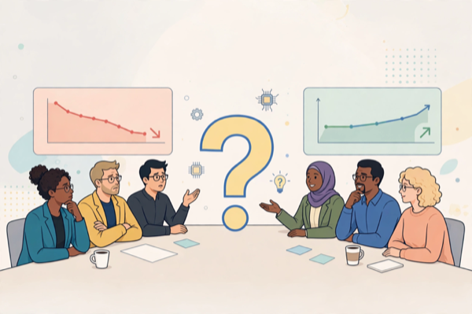
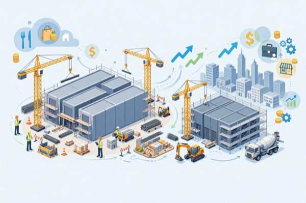

AI가 바꿀 경제의 미래
세 가지 시나리오
AI가 일자리와 경제를 어떻게 바꿀지, Anthropic 경제팀이 계산해 공개한 자료를 누구나 읽을 수 있게 정리했습니다. 숫자는 원문과 같고, 설명과 도표는 이해를 돕기 위해 새로 만들었습니다.
00결론부터 보기
이 자료가 말하는 결론은 여섯 줄로 줄일 수 있습니다.
- 📈 경제는 어느 경우에도 커진다. 다만 커지는 폭이 +1.6%에서 +32.4%까지 크게 벌어진다.
- 💼 흔들리는 건 '지식 노동'이다. 개발자·회계·상담처럼 책상에서 하는 일이 가장 크게 바뀌고, 그 사람들은 전기공·설비처럼 AI 영향이 덜한 직업으로 옮겨 가야 할 수 있다.
- 📉 평균 임금은 대체로 오르지만, 지식 노동만 방향이 반대다. 게다가 설비가 천천히 늘어나는 경우에는 평균 임금도 내려갈 수 있다(−9.2%).
- ⚖️ 커진 파이에서 일한 사람 몫은 줄고, 설비를 가진 쪽(자본) 몫은 늘어난다. 극단적 변화(lv3)에서는 노동 몫이 60%에서 45%까지 내려간다.
- 🤝 성장이 곧 모두의 이득은 아니다. GDP가 올라도 일하는 사람 전체의 소득이 줄어드는 조합도 있다. 그래서 진짜 문제는 '성장'이 아니라 '나눔'이 된다.
- ⏳ 지금은 어느 경우인지 알 수 없다. 오늘 데이터는 세 경우 모두와 맞는다. 1~2년 안에 나올 데이터가 우리가 어디에 있는지 알려 준다.
01이 문서는 무엇을 다루나
AI가 경제에 어떤 영향을 줄지는 아직 아무도 정확히 모릅니다. 세상이 엄청나게 풍요로워질 수도, 일자리가 크게 사라질 수도, 둘 다 아닐 수도 있습니다.
Anthropic 경제팀은 이 질문에 답하려고 미국 경제를 흉내 낸 계산 모델을 만들었습니다. AI의 능력과 사용 정도를 바꿔 넣으면, 2030년 경제가 어떻게 달라지는지 보여 줍니다. 이 글은 그 결과를 정리한 것입니다.
02경제는 '과업(task)'으로 이루어져 있다
이 모델의 핵심 아이디어는 간단합니다. 모든 직업을 '작은 일들의 묶음'으로 본다는 것입니다. 예를 들어 간호사라는 직업은 "환자 확인하기, 활력 징후 재기, 물품 주문하기, 근무표 짜기…" 같은 수십 개의 작은 일로 이루어져 있습니다.
AI는 이 작은 일(과업) 하나하나를 네 가지 방식 중 하나로 바꿉니다. 그래서 같은 간호사라도 하는 일의 구성이 달라집니다 — 없어지는 일, 도움받는 일, 새로 생기는 일이 섞입니다.
- 변화 없음 — 사람만 할 수 있는 일. 예: 환자를 목욕시키기.
- 보조 (증강) — AI가 도와서 더 빠르고 잘하게 함. 예: 퇴원 안내문 초안 쓰기, 원격 모니터링, 근무표 짜기.
- 자동화 — AI가 혼자 처리. 예: 활력 징후 기록, 병동 물품 주문.
- 새로 생긴 일 — AI 때문에 새로 만들어진 과업. 예: AI가 분류한 결과가 맞는지 확인하기, AI가 제안한 치료 계획 검토하기.
이렇게 과업이 바뀌면 직업의 내용도 서서히 달라집니다. 손으로 기록하던 일은 줄고, AI가 한 일을 점검하는 일은 늘어납니다. 사람은 나머지 일을 더 많이 맡게 되고, 생산성은 올라갑니다. (과업 목록은 미국 노동부 O*NET 분류를 따랐습니다.)
이 작은 일들이 미국 전역에서 하루에도 수백만 번 일어나고, 그것을 전부 더한 것이 곧 경제입니다 — 최근 1년 기준 30조 달러(약 40,000조 원) 규모. 결국 AI가 경제를 바꾸는 방식은 "얼마나 도와주고, 얼마나 대신하고, 얼마나 새 일을 만들고, 얼마나 빨리 퍼지느냐"로 결정됩니다.
03세 가지 시나리오
미래는 AI가 얼마나 똑똑해지는지, 그리고 사람들과 회사가 그걸 얼마나 빨리 쓰는지에 따라 갈립니다. 연구팀은 서로 뚜렷하게 다른 세 가지 경우를 골랐습니다. 이 문서에서는 이들을 점진적 변화(lv1), 상당한 변화(lv2), 극단적 변화(lv3)로 부릅니다.
인터넷 정도의 영향
경제 전체 과업의 4%만 AI 영향을 받는다. 영향받은 과업의 생산성은 약 35% 오른다. 효과는 인터넷이 경제를 바꾼 정도.
인터넷·철도보다 큰 충격
경제 전체 과업의 12% = 지식 노동 과업의 약 20%가 AI 영향을 받는다. 그중 4분의 3은 자동화. 성장률이 평소 2%에서 5.4%로.
역사에 없던 변환
경제 전체 과업의 30% = 지식 노동 과업의 약 절반이 AI 영향을 받고, 그중 90%가 자동화된다. AI가 스스로를 개선하는 상황을 전제로 한다.
세 경우는 다섯 개의 숫자만 바꿔서 만듭니다. AI가 닿는 과업의 범위, 그것이 실제로 얼마나 퍼지는지, 과업 하나당 생산성이 얼마나 오르는지, 자동화와 보조의 비율, 그리고 자동화된 과업 하나당 새 과업이 얼마나 생기는지입니다.
| 항목 | 점진적 변화(lv1) | 상당한 변화(lv2) | 극단적 변화(lv3) |
|---|---|---|---|
| AI가 닿는 과업 | 경제 전체의 20% | 30% | 50% |
| 실제로 쓰이는 정도 | 20% | 40% | 60% |
| → 실제 영향 범위 | 4% | 12% (지식 노동 과업의 약 20%) | 30% (지식 노동 과업의 약 절반) |
| 과업당 생산성 향상 | 약 35% | 약 57% | 약 122% (2배 이상) |
| 자동화 비중 | 절반 | 4분의 3 | 90% |
| 새 과업이 생기는 정도 | 자동화 2개당 1개 | 자동화 4개당 1개 | 없음 — 새 과업이 생기지 않는다 |
원문 보고서의 시나리오 입력값(m, d, a, ψ, ρ)을 옮긴 것입니다. "AI가 닿는 과업"에 "실제로 쓰이는 정도"를 곱한 것이 실제 영향 범위입니다.
극단적 변화(lv3)에서는 나라 전체가 역사상 가장 부유해집니다. 하지만 그와 동시에 지식 노동 일자리는 크게 줄고, 실업은 평소 경기침체 때보다 높아집니다. 그래서 이 경우의 숙제는 "성장"이 아니라 "이익을 널리 나누기"가 됩니다.
04사람들은 미래를 어떻게 예측하나 — 약 1만 9천 명 설문
이 예측 도구는 사람들에게 다섯 가지를 물어봅니다. ① AI가 어떤 일을 할 수 있나(능력) ② 얼마나 많이 쓰이나(사용) ③ 얼마나 혼자 하나(자율성) ④ 생산성을 얼마나 올리나(생산성) ⑤ 새 직업을 찾는 데 얼마나 걸리나(전환).
2026년 8월, 약 19,000명이 이 질문에 답했습니다. 다만 성격이 다른 두 집단이라 나눠서 봐야 합니다.
- 일반 대중 10,980명 — 조사기관(Morning Consult)의 온라인 패널로, 미국 성인 인구를 대표하도록 나이·성별·학력·인종·지역·소득에 가중치를 준 대표 표본입니다. 8월 11~23일, 하루 약 2,000명씩 8회로 나눠 진행했습니다.
- 탐색기 페이지 방문자 7,926명 — 이 예측 도구 페이지에 들어와 같은 질문에 직접 답한 사람들입니다. 스스로 참여한 표본이라 미국 전체를 대표하지는 않으므로 참고용입니다.
기술 보고서에 실린 공식 설문은 대표 표본 10,980명이고, 방문자 7,926명은 원문 웹 페이지에 함께 표시된 별도 집단입니다. 아래 수치는 대표 표본(10,980명)의 답을 모델에 넣은 결과입니다.
즉 대부분 사람은 "인터넷보다 크지만, 세상을 완전히 뒤집지는 않는" 중간 정도의 미래를 상상하고 있었습니다.
05발견 1 — GDP: 모두 늘지만, 폭이 완전히 다르다
| 경우 | 2030년 GDP | 한화로 (약) | AI 효과 | 느낌 |
|---|---|---|---|---|
| 점진적 변화(lv1) | $34.1T | 약 45,900조 원 | +1.6% | 늘긴 하는데 체감은 어려움 |
| 상당한 변화(lv2) | $36.3T | 약 48,800조 원 | +8.3% | 인터넷·철도보다 큰 영향 |
| 극단적 변화(lv3) | $44.4T | 약 59,700조 원 | +32.4% | 역사에 없던 크기로 확장 |
GDP는 나라 안에서 1년 동안 만들어진 것의 총합입니다. * 2025년 가격 기준. 한화는 1달러 ≈ 1,345원으로 단순 환산한 근사값(환율에 따라 달라짐).
그런데 크기보다 중요한 질문이 남습니다. 커진 경제에서 노동자가 가져가는 몫은 얼마인가? 새 일자리를 찾아야 하는 사람은 몇 명인가? 다음 세 발견이 그 답입니다.
06발견 2 — 직업을 바꿔야 하는 사람이 늘어난다
세상은 원래도 조금씩 변합니다. 누군가는 일자리를 잃고 새 일자리를 찾습니다. 평소에는 힘들어도 크게 무너지진 않습니다.
그런데 변화가 큰 경우에는 지식 노동자에게 자동화와 교체가 크게 몰립니다. 개인 입장에서는 아래 왼쪽 같은 일을 하던 사람이 오른쪽 같은 일로 옮겨 가야 할 수도 있습니다. 문제는 직업을 완전히 바꾸는 일이 어렵다는 점입니다. 새 기술을 배워야 하고, 원하지 않을 수도 있고, 새 직장을 구하는 것도 쉽지 않습니다.
| AI 영향을 크게 받는 쪽 (지식 노동) | 옮겨 갈 만한 쪽 (AI 영향이 덜한 직업) |
|---|---|
| 소프트웨어 엔지니어 · 개발자 | 전기공 |
| 콜센터 상담원 | 설비 · 설치 수리 기사 |
| 회계 · 재무 담당 | 요양보호사 · 간호조무사 |
| 법무 · 계약 담당 | 배송 · 운송 기사 |
보고서가 직접 예로 든 것은 소프트웨어 엔지니어 → 전기공("소프트웨어 엔지니어가 곧바로 전기공이나 간호사가 되지는 않는다")이고, 원문 페이지는 코더·콜센터 상담원 → 전기공·간호사를 듭니다. 나머지 예시는 보고서 부록이 밝힌 미국 표준직업분류(SOC) 기준 — 지식 노동 12개 그룹(경영·재무, 컴퓨터·수학, 법률, 사무·행정 지원 등)과 그 밖 10개 그룹(건설·추출, 설치·정비·수리, 보건 지원, 운송 등) — 에서 골랐습니다. 원문이 든 '간호사'는 이 분류로는 보건 전문직이라 지식 노동 그룹에 들어가지만, 원문은 현장 인력이 부족한 이동 대상으로 함께 언급합니다.
상당한 변화(lv2) — 고용 −3.9%, 실업률 2.9% → 4.5% (50% 이상 상승). 그 외 직업 고용은 4.6% 늘어남
극단적 변화(lv3) — 고용 −21.5%, 실업률 17.9%. 전체 실업률도 11.9%까지 (금융위기 때 약 10%보다 높음)
극단적 변화(lv3)에서는 지식 노동의 자동화가 훨씬 빠르게 진행되어, 영향을 받은 사람이 오랫동안 실업 상태에 머물 수 있습니다. 지식 노동 쪽 실업은 오르고, AI 영향을 덜 받는 직업 쪽 실업은 내려갑니다.
07발견 3 — 임금: 평균은 오르는데, 오르는 곳이 딴 데다
세 경우 모두 평균 임금은 오릅니다. 그런데 그 상승은 지식 노동 바깥에 집중됩니다. 이유는 사람이 직업을 바꾸는 데 시간이 걸리기 때문입니다. 지식 노동의 수요가 줄면 그쪽 임금은 눌리고, 반대로 AI가 지식 노동의 생산성을 올리면 그 덕을 보는 분야(예: 건설)의 일손 수요가 늘어 임금이 오릅니다.
여기에 흥미로운 사실이 하나 있습니다. 임금이 얼마나 빨리 조정되느냐에 따라 고통이 나타나는 방식이 완전히 달라집니다. 임금이 뻣뻣하면(회사가 임금을 잘 안 내리면) 해고가 늘고, 임금이 유연하면 해고는 줄지만 임금이 크게 떨어집니다.
극단적 변화(lv3)에서 임금 조정 속도만 바꿔 본 결과입니다.
| 임금 조정 | 지식 노동 임금 | 지식 노동 실업률 | 고용 | GDP |
|---|---|---|---|---|
| 매우 유연 (즉시 조정) | −42.2% | 2.6% | −1.3% | +36.6% |
| 극단적 변화(lv3)의 기준 예상 속도 | −11.5% | 17.9% | −21.5% | +32.4% |
| 매우 뻣뻣 (7년에 절반씩 조정) | +2.8% | 24.0% | −28.5% | +29.2% |
08발견 4 — 파이는 커지는데 사람 몫은 줄어든다
지금은 경제가 만든 1달러 중 약 60센트는 일하고 받는 임금(노동), 40센트는 설비를 가진 쪽이 가져가는 몫(자본)입니다.
공장·기계·서버·소프트웨어처럼 돈을 대서 만들어 놓은 설비, 그리고 그 설비를 가진 쪽이 가져가는 몫입니다. 임금으로 나가지 않고 남은 부분이라 기업 이익·배당·이자·임대료가 여기 들어갑니다.
그 돈이 최종적으로 가는 곳은 그 설비를 소유한 사람(주주·투자자)입니다. 회사가 벌어도 결국 이익은 주주에게 돌아가기 때문입니다. 연금·펀드를 통해 간접적으로 이 몫을 받는 사람도 많습니다. 반대편 '노동'은 일하고 받는 임금입니다.
경제가 커지면서 AI가 일을 대신하게 되면, 1달러 중 더 많은 부분이 자본 소득으로 흘러갈 수 있습니다. AI를 돌리려면 서버·칩·전력 같은 설비가 필요한데, 그것을 짧은 시간에 충분히 늘리기 어려우면 설비의 값이 오르기 때문입니다.
| 경우 | 2030년 GDP | 한화로 (약) | 노동 몫 | 자본 몫 |
|---|---|---|---|---|
| 점진적 변화(lv1) | $34.1T | 약 45,900조 원 | 59.4% | 40.6% (+0.6p) |
| 상당한 변화(lv2) | $36.3T | 약 48,800조 원 | 56.1% | 43.9% (+3.9p) |
| 극단적 변화(lv3) | $44.4T | 약 59,700조 원 | 45.2% | 54.8% (+14.8p) |
극단적 변화(lv3)에서는, 빠르게 커지는 경제의 이익은 고르게 퍼지지 않습니다. 지식 노동자는 임금이 줄거나 일자리를 잃고, 전체적으로 노동자가 가져가는 몫 자체가 작아집니다. 2030년까지 노동 소득 총액은 거의 그대로입니다.
숫자로 보면 더 분명합니다. 극단적 변화(lv3)에서 자본의 수익률은 6.5% → 8.3%로 약 28% 오릅니다. GDP가 오른 부분은 전부 자본 소득이 되어 자본 소득이 AI가 없을 때보다 81% 늘어납니다. 반대로 지식 노동의 임금 총액은 31% 줄고(임금 −11.5% × 일자리 −21.5%), 그 외 직업의 임금 총액은 거의 같은 폭으로 늘어납니다. 전체 노동 소득은 2030년에도 거의 그대로입니다.
그래서 이 경우의 진짜 과제는 "얼마나 벌 것인가"가 아니라 "잘 나눌 것인가"가 됩니다.
또 하나 중요한 변수가 있습니다. 설비(자본)가 얼마나 쉽게 늘어나느냐입니다. 컴퓨터와 기계를 빨리 늘릴 수 있으면 그만큼 노동이 이익을 더 가져가고, 늘리기 어려우면 자본 값이 뛰어 노동 몫이 줄어듭니다.
극단적 변화(lv3)에서 자본이 늘어나는 속도만 바꿔 본 결과입니다.
| 자본이 늘어나는 속도 | 평균 임금 | 자본 수익률 | 노동 몫 | GDP |
|---|---|---|---|---|
| 매우 느림 | −9.2% | 10.3% | 41.2% | +21.3% |
| 극단적 변화(lv3)의 기준 예상 속도 | +9.7% | 8.3% | 45.2% | +32.4% |
| 매우 빠름 | +30.1% | 6.5% | 49.1% | +43.3% |
자본이 아주 느리게 늘어나면 GDP 증가폭은 줄고(+21.3%) 평균 임금은 오히려 내려갑니다(−9.2%). 같은 AI라도 노동자가 이익을 가져가느냐는 자본이 얼마나 잘 늘어나느냐에 갈린다는 뜻입니다.
지금까지는 경제가 커지면 일하는 사람 몫도 어느 정도는 따라온다고 봤습니다. 그런데 보고서는 시나리오 값들을 서로 섞으면 정반대 경우도 나온다는 점을 짚습니다. 일자리는 없어지는데 그만큼의 성과가 따라오지 않는 조합입니다.
| 가져온 값 | 어디서 가져왔나 |
|---|---|
| AI가 닿는 범위 · 실제 사용률 · 과업당 생산성 향상(약 57%) | 상당한 변화(lv2) |
| 자동화 비중(90%) · 재취업에 걸리는 시간(짧음) · 새 과업이 생기는 정도(없음) | 극단적 변화(lv3) |
| 설비가 늘어나는 속도(느림) | 위 표에서 가장 느린 값 |
경제학에서는 이런 기술을 "별로 대단하지 않은 기술(so-so technology)"이라고 부릅니다(Acemoglu·Restrepo 2019). 일자리는 없애지만 생산성을 크게 올리지는 못해서, 사라진 일자리를 이익으로 메우지 못하는 기술이라는 뜻입니다.
중요한 건 이 조합이 보고서가 다루는 값들의 범위 안에 있다는 점입니다. 특별히 이상한 가정을 넣지 않아도 이런 결과가 나올 수 있다는 것이 이 예시의 요지입니다.
09미래는 정해져 있지 않다 🧭
2030년 경제가 어떤 모습일지는 세 가지에 달려 있습니다. 🤖 AI가 무엇을 할 수 있는지, 🏢 회사와 사람이 그걸 어떻게 받아들이는지, ⚖️ 그리고 그 이익을 어떻게 나누기로 하는지입니다.
보고서의 결론은 세 가지로 요약됩니다.
- 지금은 어느 경우인지 알 수 없습니다. 오늘의 노동시장 데이터는 세 경우 모두와 들어맞습니다. 지금까지 AI의 노동시장 충격이 크지 않은 것을 두고 "점진적 변화(lv1)라서 그렇다"와 "극단적 변화(lv3)의 아주 초입이라서 아직 안 보인다" 두 해석이 다 가능합니다.
- 1~2년 안에 드러날 것입니다. 모델의 각 숫자(과업 비중·사용률·생산성 향상·재취업 기간)는 실제로 측정 가능한 것들입니다. 그래서 앞으로 나올 데이터가 우리가 어느 경우에 있는지 알려 줍니다.
- 재원은 있지만, 자동으로 도달하지는 않습니다. 극단적 변화(lv3)에서 전체 이득은 지식 노동자가 잃는 것의 약 3배입니다. 보상할 돈은 있지만, 그 돈이 비용을 진 사람에게 가는 것은 성장이 저절로 해 주지 않습니다.
보고서는 그 수단으로 재훈련, 소득 지원, 보편적 기본자본, 기본소득, 그리고 아직 설계되지 않은 장치들을 꼽습니다. 지금까지 기술 변화에 대응해 이런 규모의 이전이 스스로 이뤄진 전례는 없었습니다.
이 계산 모델은 Anthropic이 지원하는 노동시장 대응 연구와 정책 제안에 쓰입니다. 목표는 AI의 혜택이 미국과 세계 여러 나라에 고르게 돌아가게 하는 것입니다.
10이 모델이 하지 못하는 것 (v1.0 안내문 요약)
연구팀은 외부 경제학자들에게 검토를 받았고, 그때 나온 지적들입니다. 아직 결론이 나지 않은 논쟁이라, 읽으면서 직접 생각해 볼 만합니다.
사람 한 명의 고통은 담기지 않는다
이 계산은 사람을 한 명씩 따라가지 않고 '몇만 명이 전직'처럼 숫자로만 셉니다. 그 사람들이 실제로 겪는 어려움은 어디에 담을까요?

AI에 노출된 직업, 정말 줄어들까?
이 모델은 그 직업이 줄어든다고 봅니다. 하지만 AI가 생산성을 높여 그 일이 오히려 늘어날 수도 있다는 반론이 있습니다. 어느 쪽이 맞을까요?
"극단적 변화(lv3)"도 "점진적 변화(lv1)"도 양쪽에서 비판받는다
"극단적 변화(lv3)는 상상에 가깝다"는 평가가 있는가 하면, "점진적 변화(lv1)는 이미 보이는 변화조차 너무 작게 본다"는 평가도 있습니다. 중간은 어디일까요?

데이터센터 짓는 경기 부양 효과가 빠졌다
AI를 돌리려고 데이터센터를 대규모로 짓고 있습니다. 그 공사 자체가 일자리와 투자를 늘리는 효과가 모델에 반영되지 않았습니다.

AI가 기술 발전 자체를 더 빠르게 만들면?
AI는 연구와 개발을 도와 새 아이디어가 더 빨리 나오게 합니다. 이 통로를 모델에 실제로 넣고 계산했지만, 경제에 미친 효과는 거의 없었습니다.*
이 모델에서 AI가 성장을 밀어 올리는 통로는 두 개입니다. 하나는 일을 대신하는 통로(AI가 과업을 처리해 생산성이 오름)이고, 다른 하나가 아이디어 통로(AI가 연구·개발을 도와 새 지식이 빨리 나옴)입니다. 논점 5는 두 번째 통로 이야기입니다.
이 통로를 모델에 실제로 만들어 넣고 계산했는데, 결과는 거의 없었습니다. 극단적 변화(lv3)에서도 2030년의 아이디어 재고는 AI가 없을 때보다 0.61% 높은 수준에 그쳤습니다. 연구에 들어가는 돈이 GDP의 일정 비율이라 GDP가 늘면 연구비도 늘지만, 그 늘어난 연구비가 새 지식으로 바뀌어 경제에 퍼지기까지는 수십 년이 걸리기 때문입니다.
저자들도 이걸 "의외의 발견"이라고 적습니다. 이유는 연구가 머리 쓰는 일만으로 끝나지 않기 때문입니다. 실험하고, 만들어 보고, 임상시험을 거치는 손과 설비가 필요한 단계에서 막힙니다. AI가 생각하는 시간을 줄여 줘도 그 단계는 빨라지지 않습니다. 그래서 이 통로가 노동 생산성을 올리는 폭은 세 경우 모두 1%도 되지 않습니다.
여기서 "효과가 거의 없다"는 AI가 쓸모없다는 뜻이 아닙니다. 일을 대신하는 통로는 효과가 큽니다 — 극단적 변화(lv3)에서 측정된 생산성(TFP)이 AI가 없을 때보다 +13.4% 높아지는 것도 이 통로 덕분입니다. 아이디어 통로 하나만 작다는 뜻입니다.
그러면 "AI가 스스로를 더 똑똑하게 만드는" 자가발전이 일어나 성장이 폭발적으로 빨라지는 상황은 이 모델에서 나오지 않습니다. 원문은 이걸 자가발전(재귀적 자기개선, recursive self-improvement)이라고 부르고, 다른 연구들(Aghion·Jones·Jones 2019, Davidson 등 2026)이 다루는 그 급격한 가속과 특이점은 재현되지 않는다고 밝힙니다.
이유는 모델 설계에 있습니다. 새로 나온 아이디어가 다시 AI 성능을 끌어올리는 되먹임 고리를 넣지 않았고, 자가발전으로 얻을 이득은 시나리오에 미리 정해 넣은 값으로 처리했습니다. 그래서 저자들은 여기 나온 혁신 효과가 가장 작게 잡은 값(하한선)일 수 있다고 봅니다. 현실에서 자가발전이 실제로 일어난다면, GDP는 이 문서의 숫자보다 높아질 수 있습니다.
- 로봇 공학의 발전 — AI가 몸을 갖게 되면 육체 노동도 바뀝니다. 이걸 넣지 않았기 때문에 분석을 2030년까지만 했습니다.
- 물가 경직성과 수요의 되먹임 — 충격이 소비를 줄여 다시 충격을 키우는 악순환을 담지 못합니다.
- 노동자의 이질성 — 직업을 바꾼 사람이 쌓아 온 경력과 기술을 잃지 않고 새 직업의 임금을 곧바로 받는다고 가정합니다. 실제 이직의 손실을 과소평가할 수 있습니다.
- 집안일·돌봄의 가치 — AI가 가사와 돌봄을 덜어 주는 이득은 GDP 밖이라 잡히지 않습니다.
- 자본의 종류 구분 — AI용 컴퓨트와 다른 자본을 나누지 않고, 이미 2024년 이전에 자동화된 과업의 생산성 향상도 반영하지 않습니다.
외부 검토자: Daron Acemoglu, David Autor, David Romer, Jón Steinsson, Pascual Restrepo 등 다수. 모델과 기술 보고서는 Anton Korinek, Chad Jones, Szymon Sacher, Tess Cotter, Peter McCrory가 함께 썼습니다.
© 원문 저작권은 Anthropic에 있으며, 본 문서는 원문 구조를 따라 재구성한 한국어 해설입니다.